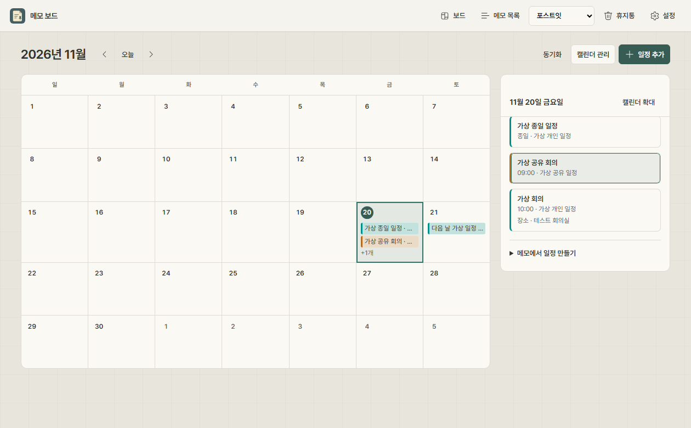

Windows · macOS · Linux
메모를 붙이고,
하루를 정리하세요.
보드에서 메모를 옮기고, 필요한 것만 화면 위에 고정하세요. 메모와 일정을 한 앱에서 볼 수 있습니다.

설치와 업데이트
- Windows — 앱을 완전히 종료한 후 EXE를 실행하세요.
- macOS — Apple 메뉴의 ‘이 Mac에 관하여’에서 칩을 확인하세요. 해당 ZIP을 풀고 ‘메모 보드’ 앱을 응용 프로그램 폴더로 옮기세요.
- Linux — AppImage에 실행 권한을 부여한 뒤 여세요. 캘린더 주소 저장에는 데스크톱 보안 저장소가 필요합니다.
새 버전은 직접 내려받아 적용합니다. 메모와 첨부파일은 사용자별 앱 데이터 폴더에 저장됩니다.
메모 기능은 계정 없이 사용할 수 있습니다. Google·Outlook 일정은 캘린더 관리에서 iCal 주소를 등록하면 읽기 전용으로 표시됩니다.
Windows 설치 파일에는 코드 서명이 없으며, macOS 앱에는 Developer ID 서명과 Apple 공증이 없어 열기가 제한될 수 있습니다.